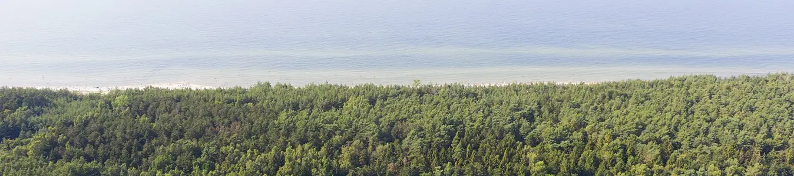

Hotel Siesta ★★★
1 Woche schon ab299 €pro Person
Ansehen
Polnische Ostsee
Das Ostseebad Gribow (auf Polnisch: Grzybowo) befindet sich circa fünf bis acht Kilometer westlich von dem Zentrum der polnischen Hafenstadt Kolberg. Die ruhige und in der polnischen Region Westpommern gelegene Örtchen erwacht erst in der Saison zum Leben. Es geht hier allerdings auch im Sommer eher ruhig zu. Daher zieht das Dorf meistens Besucher, die die Ruhe und Natur genießen wollen. Der 700 Meter lange Strand von Gribow wird sowohl von jungen als auch von alten Besuchern geschätzt. Zwischen Gribow und der Ostsee erstreckt sich ein Küstenwald und Dünen. In der Nachbarstadt Kolberg erwarten Sie hingegen zahlreiche Attraktionen. Diese können Sie ganz einfach mit öffentlichen Verkehrsmitteln erreichen. Demnach eignet sich Gribow optimal für einen ruhigen Ostseeurlaub und eine erholsame Atmosphäre. Durch Gribow verlaufen herrliche Radwege nach Kolberg, Kolberg Deep und Henkenhagen.
Unsere Hotels
1 Woche schon ab299 €pro Person
Ansehen1 Woche schon ab399 €pro Person
AnsehenWir sind für Sie da
Unsere Urlaubsspezialisten kennen die Hotels persönlich und helfen Ihnen gerne bei der Auswahl – telefonisch oder in unserem Reisebüro in Berlin-Pankow.